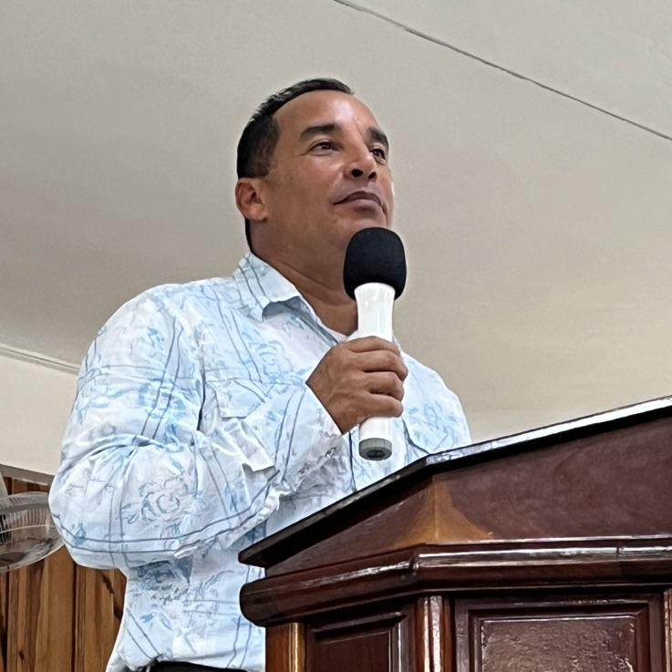

📆 Horarios principales de cultos
- Domingo: Escuela Dominical – 10:00 AM
- Sábado: Culto Departamental – 9:30 AM
- Viernes: Tiempo de Estudio Bíblico (TEB) para jóvenes – 8:30 PM
📍 Dirección de la Iglesia
Calle 15 / 50 y 52, Jagüey Grande, Cuba
🎯 Misión de la Iglesia
Evangelizar, discipular, adorar a Dios y servir con pasión.
“Pero cuando venga el Espíritu Santo sobre ustedes, recibirán poder y serán mis testigos…” — Hechos 1:8 (NVI)
🛠️ Ministerios Activos
- Ministerio de jóvenes: “Generación que Resplandece”
Ir al Ministerio de Jóvenes - Ministerio de niños
- Ministerio de alabanza
- Ministerio de evangelismo
- Ministerio de oración
- Ayuda social y compasión cristiana
👥 Pastores

Pastor Balodia Montero
📞 +53 5826 1907
Pastora Yuleny Batista
📞 +53 5867 1946